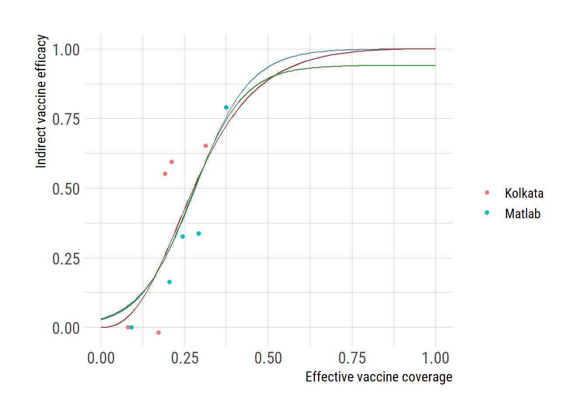

vc_cut <- c(0, 28, 35, 40, 50, 65)
vc_matlab <- vc_cut[1:5] + diff(vc_cut)/2
# the data coming from the first year of vaccination
ve_first_year <- 0.65
eff_vc_matlab <- ve_first_year * vc_matlab
ir <- c(7.01, 5.87, 4.72, 4.65, 1.47)
# lowest vaccine coverage group has no indirect effect
ive_matlab <- (ir[1]-ir)/ir[1]*100
# Ali (2013) Kolkata, India
# Data from 3-year follow-up. Total protective efficacy remained high (66%)
# therefore, effective vaccine coverage still calculated as we did for
# Matlab, Bangladesh data
# Out of 107,347 eligible residents, 66,990 received 2 doses
vc_cut <- c(0, 25, 28, 31, 34, 100*66990/107347)
vc_kolkata <- vc_cut[1:5] + diff(vc_cut)/2
ve_first_year <- 0.65 # the data coming from the first year of vaccination
eff_vc_kolkata <- ve_first_year * vc_kolkata
ir <- c(5.54, 5.64, 2.48, 2.25, 1.93)
ive_kolkata <- (ir[1]-ir)/ir[1]*100
ive_dat <- data.frame(eff_vacc_cov = c(eff_vc_kolkata, eff_vc_matlab),
indirect_vacc_eff = c(ive_kolkata, ive_matlab))
ive_dat <- ive_dat / 100
ive_dat$type <- "data"
ive_dat$location <- c(rep("Kolkata", length(eff_vc_kolkata)), rep("Matlab",length(eff_vc_matlab)))Logistic function in R
Logistic function
indirect vaccine effectiveness
oral cholera vaccine
Logistic function
The logistic function, represented as: \[ f(x) = \frac{L}{1+e^{-k(x-x_0)}} \] , where \(x_{0}, L\), and \(k\) represent tht value of the function’s midpoint, the supremum of the values of the function, and the logistic growth rate or steepness of the curve. For values of \(x\) in the domain of real numbers from \(-\infty\) to \(+\infty\), the S-shaped curve approaching \(L\) as \(x\) approaches \(+\infty\) and approaching zero as \(x\) approaches \(-\infty\).
This function was originally devised as a model of population growth and is a versatile tool used in various fields, including epidemiology. In epidemiological contexts, it serves as a mathematical model to describe the growth or decline of infectious diseases within a population over time. See this study, for example, in which the logistic equation was used to decribe the growth of COVID-19 in a population.
The standard logistic function, where \(x_{0}=0, L=1, k=1\), is sometimes called sigmoid or expit.
In the logistic function, the initial stage of growth is approximately exponential (geometric); then, as saturation begins, the growth slows to linear (arithmetic), and at maturity, growth stops. This function may be also used to describe other phenomena and was recently used to model the shape of indirect vaccine efficacy (IVE) in response to the vaccine coverage levels. We are going to explore the use of the logistic function to model the IVE.
Indirect vaccine effectiveness
Indirect vaccine effectiveness (IVE) is a crucial metric in assessing the impact of vaccination on both vaccinated and unvaccinated individuals within a population. It refers to the protection unvaccinated individuals receive due to the presence of vaccinated individuals in the community.
To delve into the dynamics of IVE, we examine data from clinical trials of oral cholera vaccine conducted in Bangladesh and India. These studies provide insights into how varying levels of vaccination coverage affect the incidence rates among unvaccinated individuals residing in the same cluster.
In particular, we use the IVE analyzed based on clinical trials of oral cholera vaccines in Bangladesh and in India. In Table 1 below, we analyze the relationship between “Level of vaccine coverage” and the incidence rates among placebo recipients. The presence of IVE is evident as the risk of illness among placebo recipients diminishes with increasing vaccine coverage levels.

Here, we assumed that the incidence rate among in the unvaccinated population, (i.e., no one was vaccinated) would be the same as the incidence rate observed in the lowest level of vaccine coverage rate, which would be 14% for Matlab and 12.5% for Kolkata. Because of this assumption, we may be underestimating the IVE. While it may be possible to reduce effective vaccine coverage rates by taking the difference between the effective vaccine coverage rates presented here and the lowest vaccine coverage rates (i.e., 14% or 12.5%), I wanted to be rather conservative than overestimating the impact.
Now we develop the logistic equation and fit the equation to the data. Since we know that the IVE has to be between \(0\) and \(1\), we set \(L\) at 1.
fm <- indirect_vacc_eff ~ 1 / (1 + exp(-k*(eff_vacc_cov-x0)))
fit <- nls(formula=fm, data=ive_dat, start=list(k=12, x0=0.27))
predict_logis <- function(x) {
1 / (1 + exp(-coef(fit)[1]*(x-coef(fit)[2])))
}
newx <- seq(0,1,by=0.01)
newy <- predict_logis(newx)
d <- rbind(ive_dat, data.frame(eff_vacc_cov=newx,
indirect_vacc_eff=newy,
type="Model1", location=NA))R has a self-starting logistic function, which can be helpful in case nls function is not successful for finding the parameter values with the given staring values.
fit_SSlogis <- nls(indirect_vacc_eff ~ SSlogis(eff_vacc_cov, Asym, xmid, scal),
ive_dat)
Asym <- coef(fit_SSlogis)["Asym"]
xmid <- coef(fit_SSlogis)["xmid"]
scal <- coef(fit_SSlogis)["scal"]
## SSlogis has a different convention for the terms
pred_SSlogis <- function(x){
Asym / (1 + exp((xmid - x)/scal))
}
newx <- seq(0,1,by=0.01)
newy <- pred_SSlogis(newx)
d <- rbind(d, data.frame(eff_vacc_cov=newx,
indirect_vacc_eff=newy,
type="SSmodel", location=NA))Finally, we can force the logistic function to converge to 1 when the effective vaccine coverage reaches 1 and to 0 when the effective vaccine coverage is 0.
dat <- data.frame(x=ive_dat$eff_vacc_cov, y=ive_dat$indirect_vacc_eff)
# fm <- indirect_vacc_eff ~ 1 / (1 + exp(-k*(eff_vacc_cov-x0)))
fm2 <- y ~ 1 / (1+((1-x)*x0/(x*(1-x0)))^k)
fit2 <- nls(formula=fm2, data=dat, start=list(k=1, x0=0.1))
predict_logis2 <- function(x) {
k <- coef(fit2)[["k"]]
x0 <- coef(fit2)[["x0"]]
1 / (1+((1-x)*x0/(x*(1-x0)))^k)
}
newx <- seq(0,1,by=0.01)
newy <- predict_logis2(newx)
d <- rbind(d, data.frame(eff_vacc_cov=newx,
indirect_vacc_eff=newy,
type="Model2", location=NA))library(ggplot2)
extrafont::loadfonts("win", quiet=TRUE)
theme_set(hrbrthemes::theme_ipsum_rc(base_size=14, subtitle_size=16, axis_title_size=12))
ggplot() +
geom_point(data=subset(d, type=="data"),
aes(eff_vacc_cov, indirect_vacc_eff, color=location))+
geom_line(data=subset(d, type=="Model1"),
aes(eff_vacc_cov, indirect_vacc_eff), color="steelblue") +
geom_line(data=subset(d, type=="Model2"),
aes(eff_vacc_cov, indirect_vacc_eff), color="firebrick") +
geom_line(data=subset(d, type=="SSmodel"),
aes(eff_vacc_cov, indirect_vacc_eff), color="forestgreen")+
labs(y="Indirect vaccine efficacy", x="Effective vaccine coverage", color="")
# ggsave("ive_vacc_cov.png")